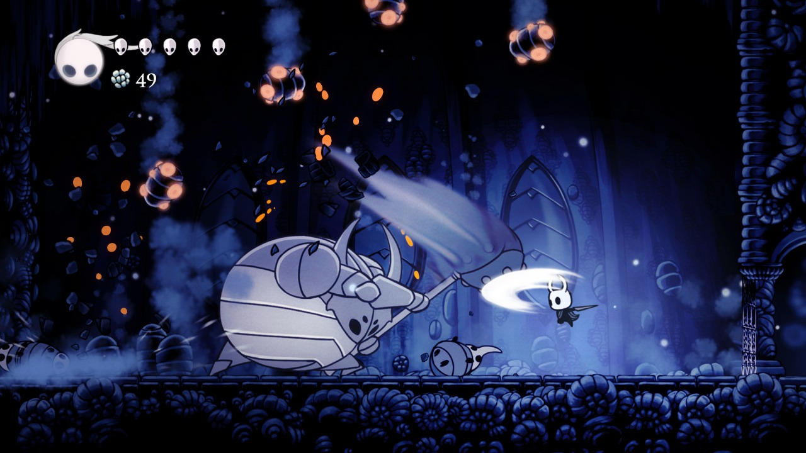
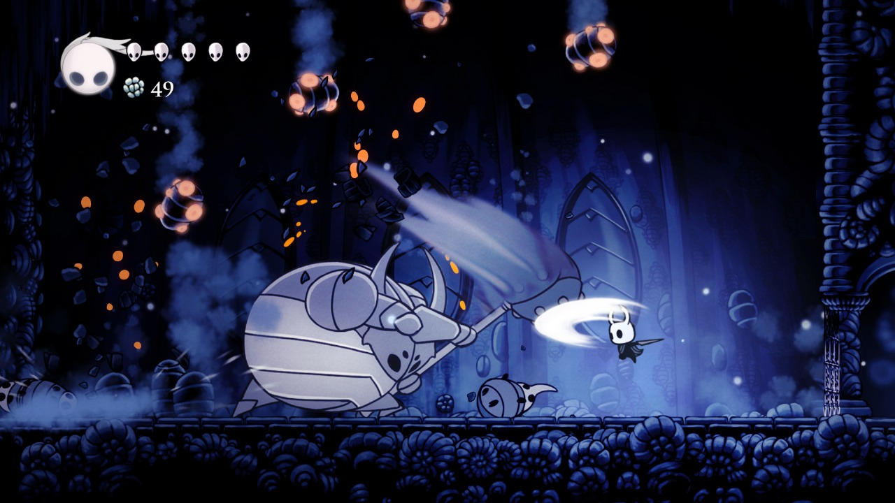

HOLLOW KNIGHT
Hollow Knight é um jogo indie de ação e aventura desenvolvido pela Team Cherry, que conquistou fãs ao redor do mundo com sua atmosfera única e seu universo profundamente cativante. Situado no reino abandonado de Hallownest, o jogador assume o papel de um pequeno cavaleiro silencioso, explorando cavernas misteriosas, ruínas esquecidas e cidades decadentes, enquanto descobre segredos antigos e enfrenta inimigos formidáveis.
O jogo combina exploração estilo Metroidvania com combates desafiadores e precisos. Cada área de Hallownest é ricamente detalhada, repleta de criaturas peculiares, NPCs enigmáticos e histórias fragmentadas que o jogador vai reconstruindo ao longo da jornada. A liberdade de exploração é complementada por um sistema de habilidades que permite ao cavaleiro alcançar lugares antes inacessíveis, revelando caminhos secretos e tesouros escondidos.
Além da jogabilidade envolvente, Hollow Knight se destaca pelo seu estilo artístico feito à mão, com animações delicadas e sombrias, e uma trilha sonora atmosférica que mergulha o jogador em um mundo melancólico e encantador ao mesmo tempo. A dificuldade é desafiadora, mas justa, recompensando paciência, estratégia e curiosidade.
Com sua combinação de narrativa ambiental, design de mundo coeso e combate refinado, Hollow Knight não é apenas um jogo, mas uma experiência que permanece na memória do jogador muito tempo após a última batalha. Para quem gosta de exploração, mistério e desafios gratificantes, Hollow Knight é um título imperdível.